jan 2026
Kick-off da área
Diagnóstico do problema, a tese de escopo, a estrutura do time e um plano de 30, 60 e 90 dias com entregável definido em cada fase.
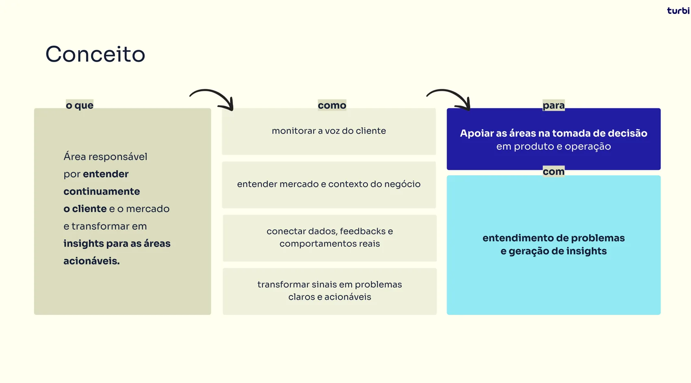
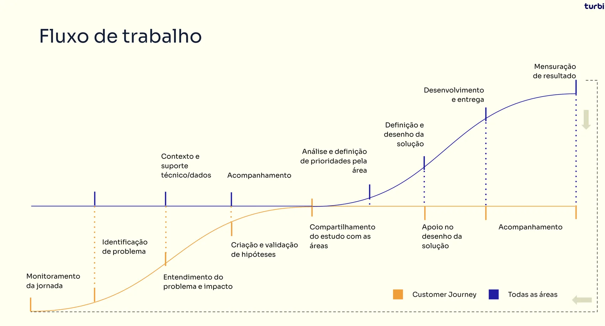
2026
criação da área e reforço da cultura client first
Resumo
A empresa cresceu rápido e a cultura de cliente virou assunto secundário. Cada área enxergava o seu recorte e o sintoma era a falta de tomada de decisão, muitas vezes por falta de informação.
A área nasceu com um grande desafio: como mapear uma jornada de ponta a ponta que tem intervenção de basicamente todas as áreas da empresa? E como engajar essas áreas a executarem as ações priorizadas, sendo um time de diagnóstico e não de execução?
Customer Journey não substitui áreas especialistas, mas organiza o problema e traz profundidade antes de virar uma solução.
O método precisava produzir conhecimento para decisão, não apenas para relatórios. Montamos um ciclo contínuo: escutar todos os canais, achar onde o atrito custa mais caro, transformar em hipótese com métrica-alvo e critério de sucesso, entregar para área dona do problema e acompanhar o resultado junto com ela.
O que foi feito
jan 2026
Diagnóstico do problema, a tese de escopo, a estrutura do time e um plano de 30, 60 e 90 dias com entregável definido em cada fase.


fev 2026
Taxa de contato por reserva como métrica principal e promotores na avaliação pós-viagem como secundária, com meta negociada até dezembro. No mesmo movimento, revisamos um NPS herdado que não tinha amostra válida.
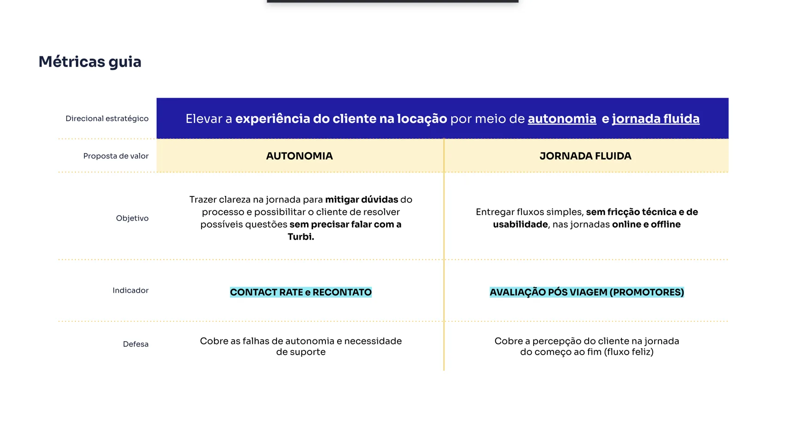
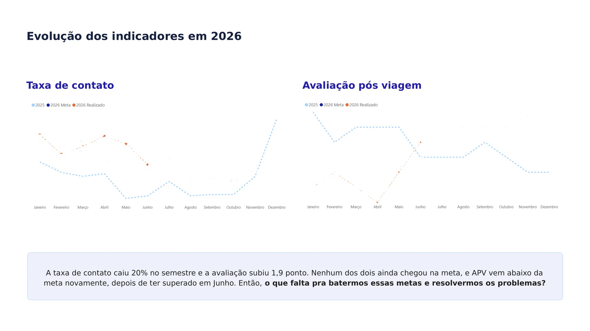
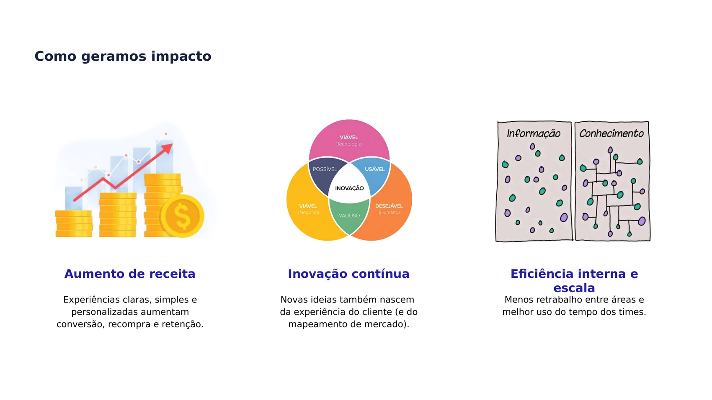
fev 2026
Atendimento, avaliação pós-viagem, redes, review de loja e pesquisa lidos juntos pela primeira vez, mais vivências de shadowing como cliente e benchmark com 14 marcas de mobilidade. Saiu dali o ranking de atrito por volume e criticidade.
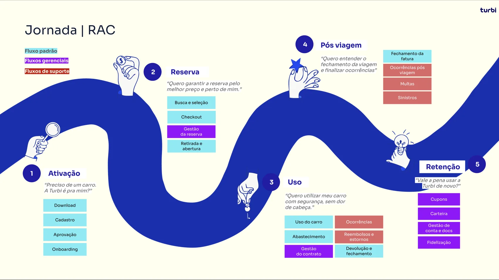
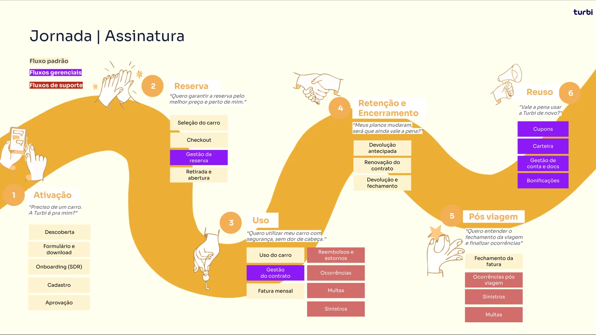
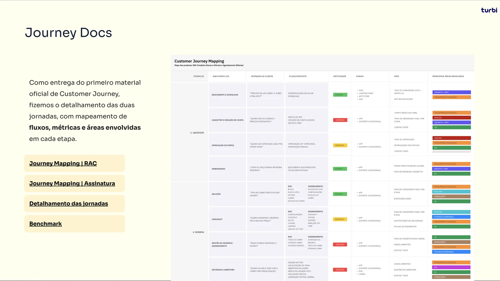
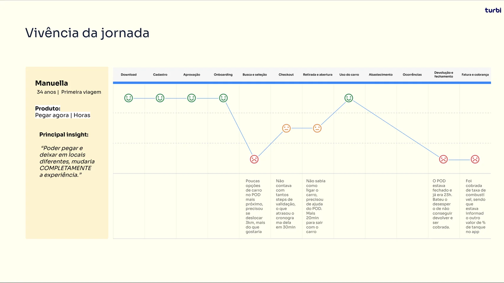
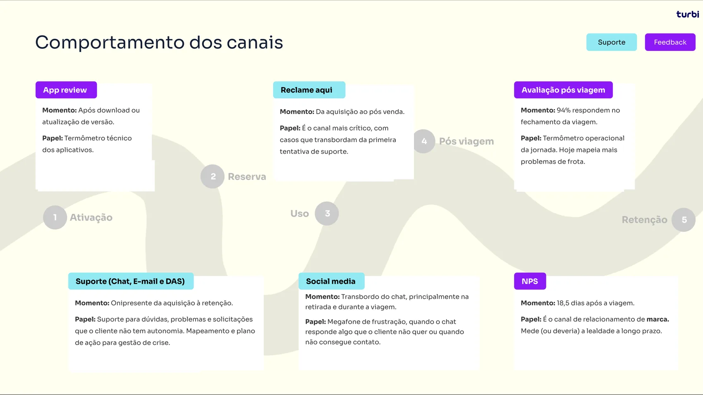
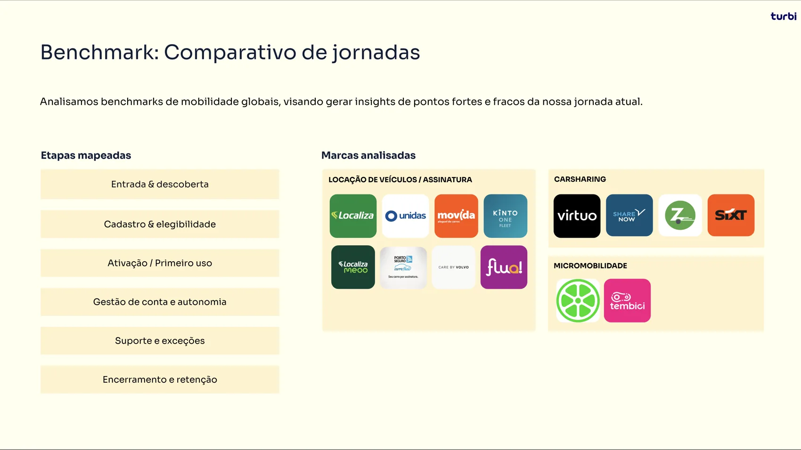
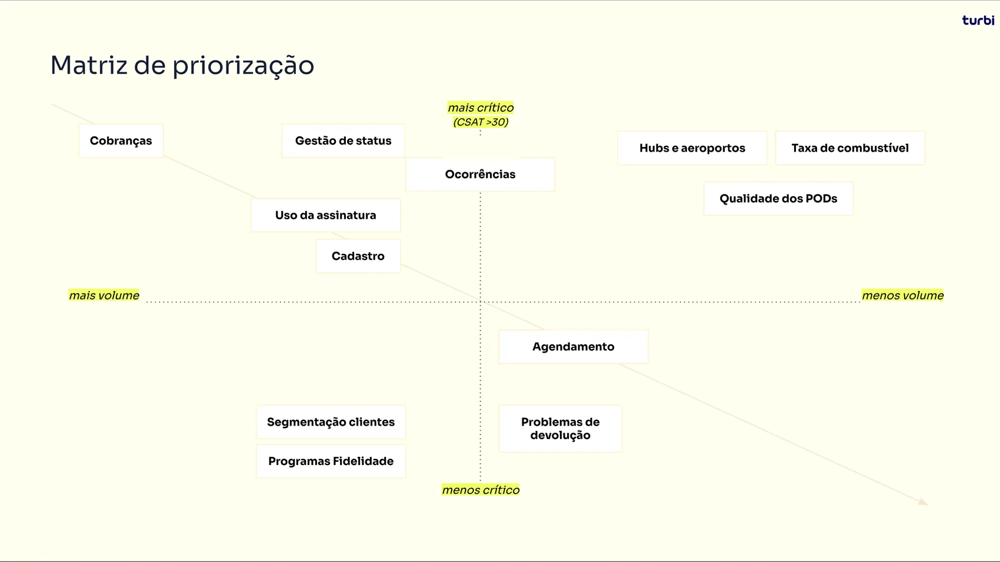
mar–jun 2026
Um estudo por tema, na ordem que a matriz apontou: cadastro, cobranças, bloqueio de conta, limpeza da frota, agente de atendimento e um caso real de pendência reconstruído minuto a minuto. Cada um com leitura de conversa real, análise de causa, benchmark e teste com cliente.
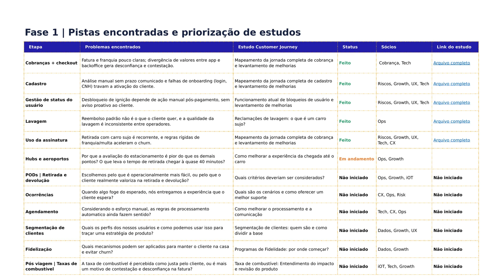
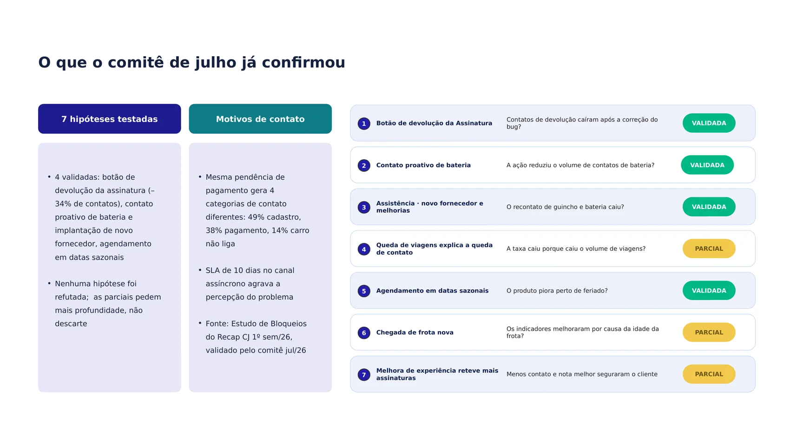
ago 2026
O recap do semestre entrou na repriorização de produto do ano. Saíram dez frentes ordenadas por impacto, com cobrança, cadastro e bloqueio de conta no topo, e cinco delas eram novas no portfólio.
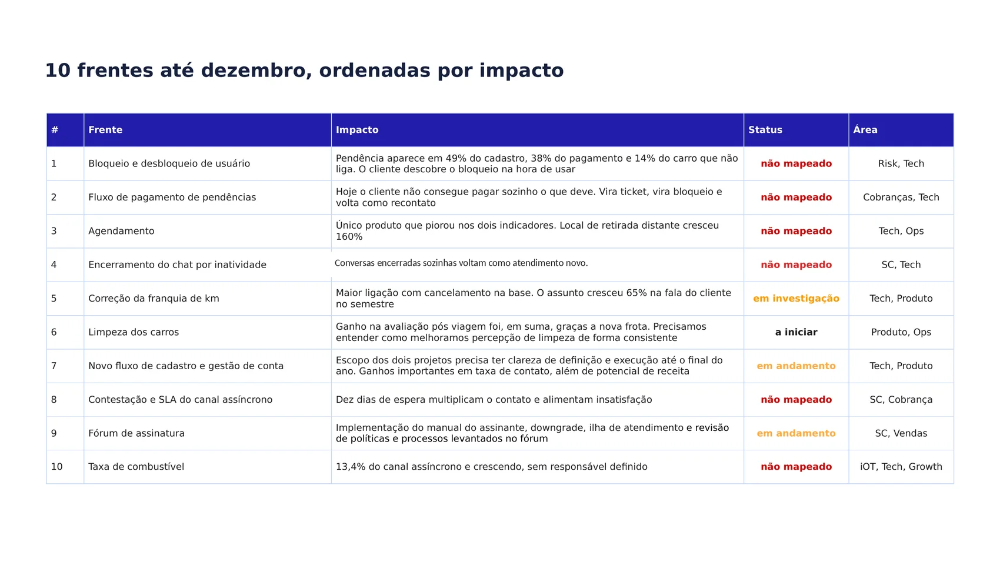
O que mais derruba a avaliação não é o app, é o carro sujo, a retirada travada e a cobrança que o cliente não entende. Isso mudou a pergunta da empresa: em vez de melhorar o atendimento, resolver o que gera o contato.
O que chegava rotulado como cobrança tinha causas raiz diferentes: cartão que falha, valor calculado errado, pendência que ninguém consegue quitar sozinho e bloqueio que vem depois. Tratado como um tema só, o volume mascarava quatro problemas com donos e soluções diferentes.
Ir fundo em um tema por vez levava a ajustes pequenos e cirúrgicos, com efeito grande. O mapeamento superficial fazia o caminho oposto: apontava o sintoma na jornada inteira e terminava em recomendação de refatorar tudo, que ninguém prioriza.
25%
dos contatos de suporte eram sobre cobrança
85%
dos bloqueios de conta vinham de falha de pagamento
47%
das reclamações de limpeza vinham do uso do cliente anterior
−20%
na taxa de contato por reserva
Primeiro semestre de 2026 contra o começo do ano. Métrica principal da área.
+2 pt
de promotores na avaliação pós-viagem
Só nota máxima conta como promotor. Bateu a meta em um mês do semestre e recuou.
5
frentes novas no roadmap de produto por causa dos estudos
Não existiam no portfólio antes. Cada uma com área dona definida.
O número que sustenta os outros é o menos vistoso: a perda de assinantes nos três primeiros meses caiu quase um quarto no semestre, acompanhando de perto a queda de contatos por viagem. Só que boa parte do ganho ainda veio de eficiência de atendimento, e não de causa raiz resolvida, e é exatamente essa diferença entre reduzir contato e reduzir problema que definiu a fila do semestre seguinte.
Gostou desse case? Bora conversar! :)